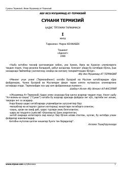

STImom at-Termiziyning mashhur hadislar to'plami va uning o'zbekcha sharhli tarjimasi.
Ushbu asar mashhur muhaddis Imom Muhammad at-Termiziyning hadislar to'plami bo'lib, unda islom huquqshunosligi va fiqh masalalari keng yoritilgan. Kitobda hadislarning arabcha matni va ularning o'zbekcha tarjimasi, shuningdek, Hanafiy mazhabi nuqtai nazaridan sharh va izohlar keltirilgan.